My travel camera bag
How to prepare for a photo trip abroad
presented by:
Adam Derewecki
adam@cameralends.com
CameraLends Founder
May 13, 2014
Photographers Adventure Club
Hi, I'm Adam
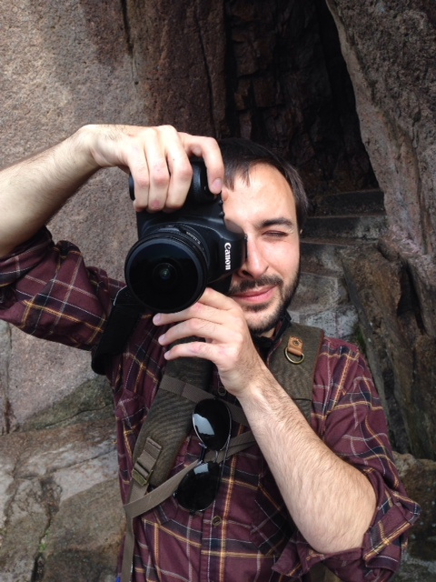
-
Moved to San Francisco from Cleveland six years ago
-
"Into" photography for nine years
-
Run a peer-to-peer camera rental web site (CameraLends.com)
Travel photography
-
Combines love of traveling and love of photography
-
Create memories worth hanging on your wall, not just Instagram
-
Not high commercial value, compared to paid gigs
-
Mostly done for the love of it
Destination considerations: safety
-
Hawaiian beaches are very different than Brazilian flavelas
-
Don't advertise your camera collection in unsavory places
-
I've swapped a Rebel XTI shoulder band for my Mark II
-
Keep your camera tucked away in dodgy areas
-
Not everyone wants their picture taken -- don't provoke locals
Beijing market: blocked!
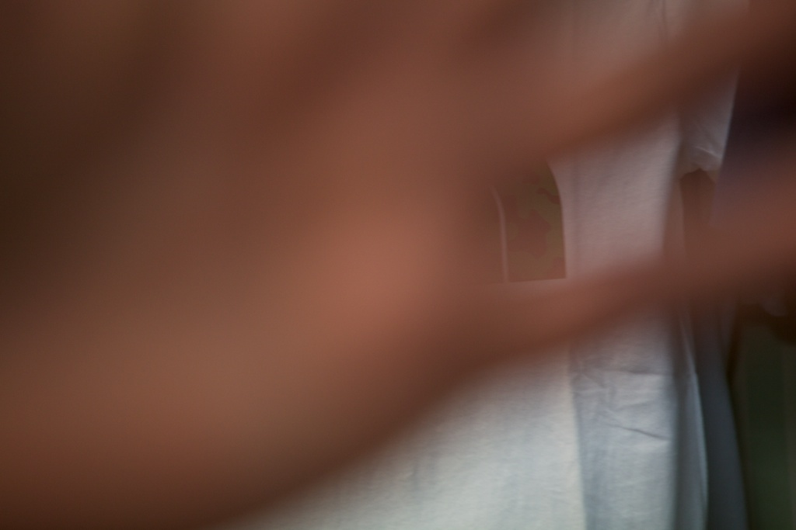
Destination considerations: portability
-
Which gear should you bring?
-
How much does your gear weigh?
-
How do you pack your gear?
National Geographic Medium Rucksack
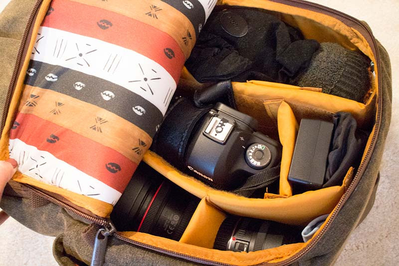
My gear
-
Canon 5D Mark II
-
Canon 24-70mm f/2.8L
-
Canon 50mm f/2.8 Macro
-
Canon 8-15 f/4L Fisheye
-
Polaroid 42" Travel Tripod
($20, amzn.com/B004W4BAUO)
-
Canon TC80N3 compatible intervalometer
($36, amzn.com/B002IPMQTS)
-
Misc: 32 GB Flash card, battery charger, battery, lens cloth
Canon 5D Mark II
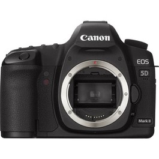
-
Launched in 2008
-
22 megapixels, full frame
-
House
sixth season finale shot on Mark IIs
Mark II benefits
-
Battery life was several days
-
Fantastic sensor quality
-
Great in low-light
-
Shoots in RAW format
-
You're shooting in RAW format right?
-
Drawback: others can't take a picture of you
Canon 24-70mm f/2.8L
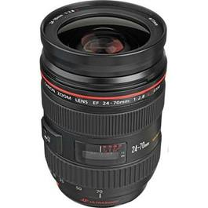
-
L series
-
24-70mm is versatile for wide angle and portrait
-
f/2.8 works wonders in low-light like caves
-
Drawback: heavy/bulky (esp compared to 50mm)
Canon 50mm f/2.5 Macro
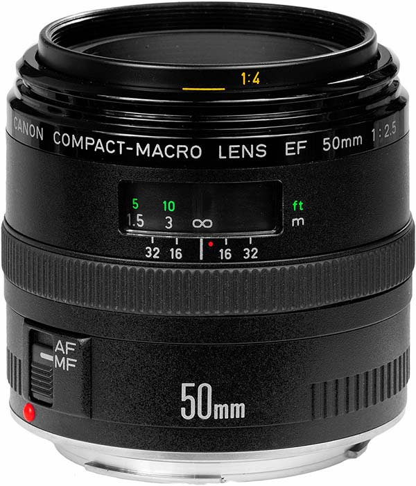
-
EF Macro
-
50mm is a bit constraining, which is a feature
-
f/2.5 gives great depth of field
-
Fantastic
image quality
Monkey Rock at sunrise (50mm)
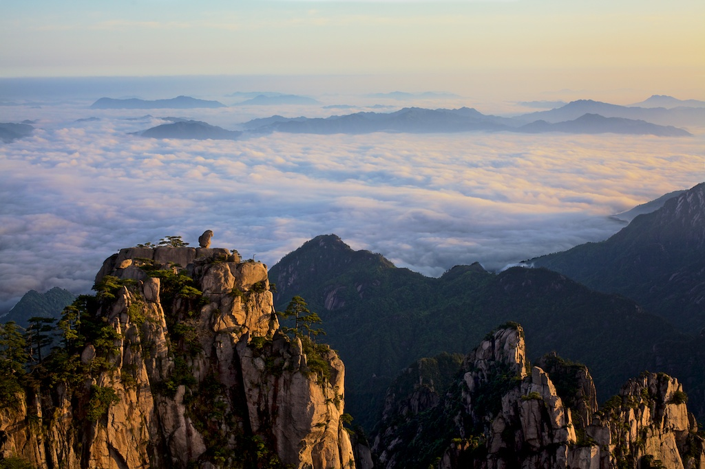
Canon 8-15mm f/4L Fisheye
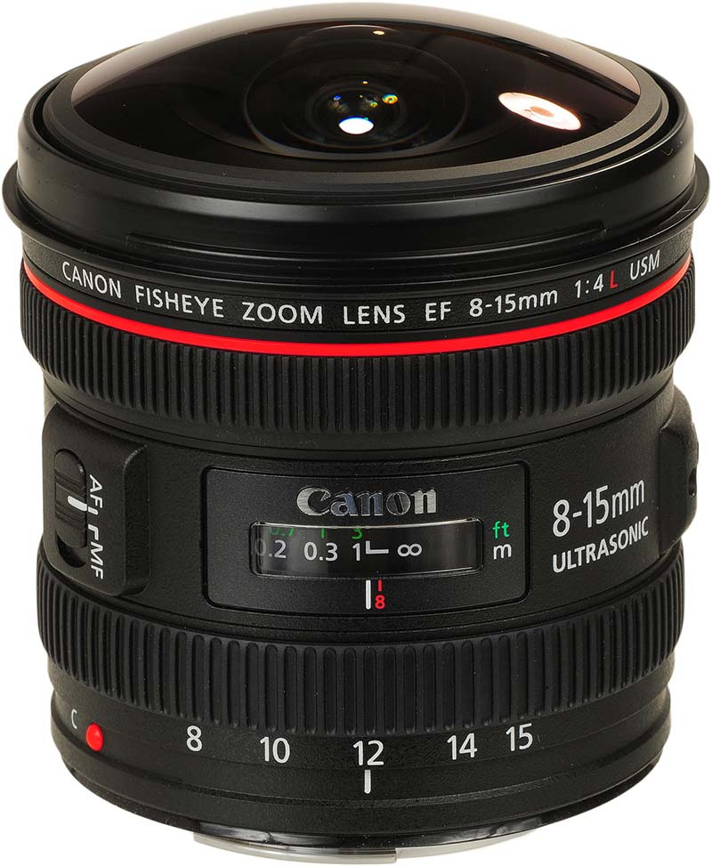
-
L Series (upgrade from Bower 8mm)
-
All available focal lengths are wacky, mostly impractical
-
Girlfriend says it's unflattering for portraits
-
Sometimes
it can give you an amazing result though
9 Bends River, Wuyishan
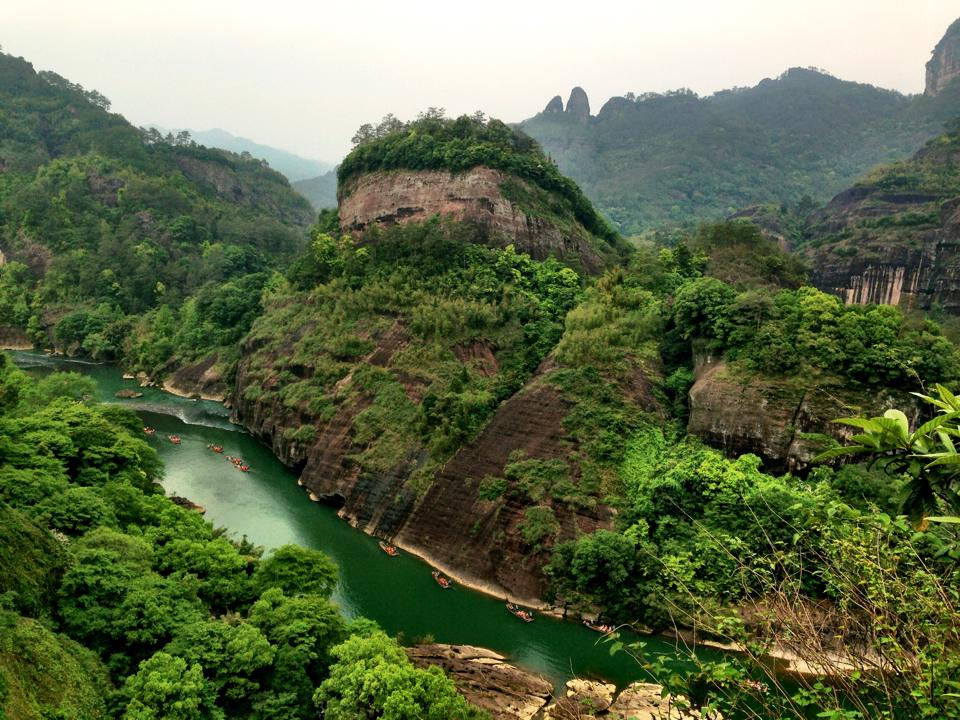
taken with iPhone
9 Bends River, Wuyishan
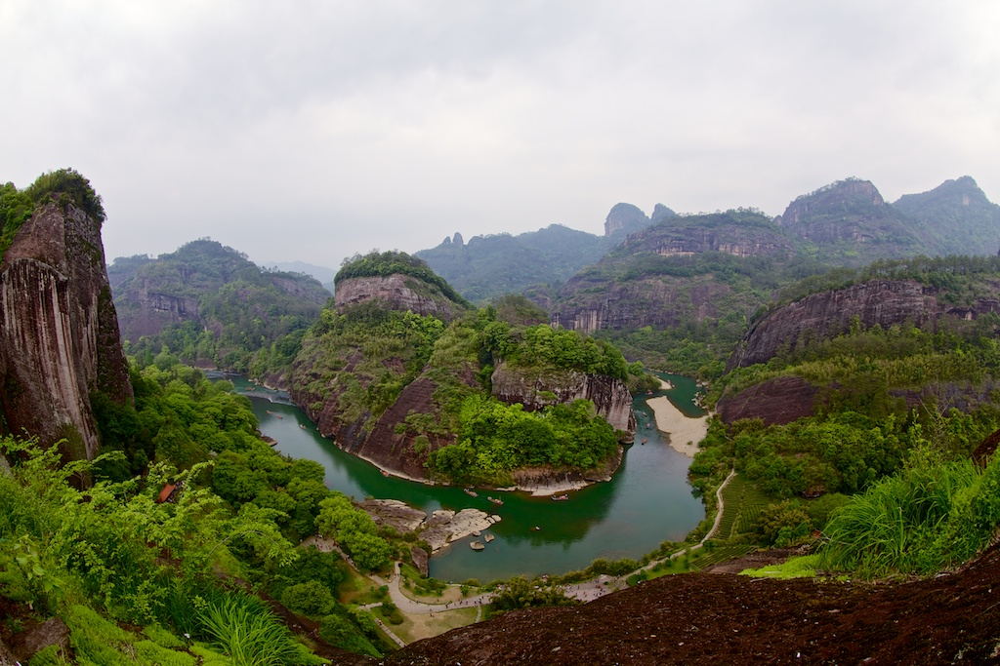
taken with Fisheye at 15mm
Guadalupe National Park
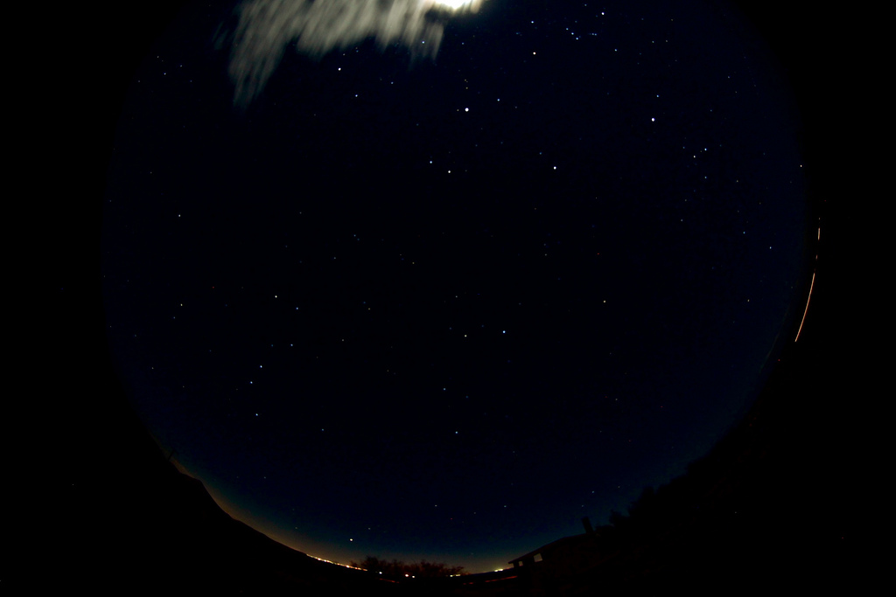
taken with Fisheye at 15mm
Guadalupe National Park
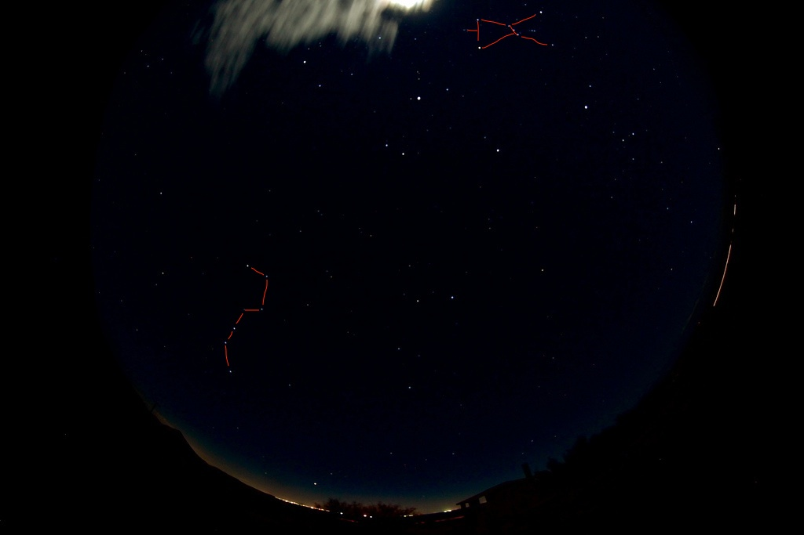
taken with Fisheye at 15mm
Tripod and intervalometer
-
Similar to fisheye -- often impractical, but can capture a
scene in a very distinctive way
-
We had a balcony on the 16th floor in Xiamen
-
Taped the tripod to the balcony railing and took a timelapse
from 2am until about 9am
Xiamen sunrise (vimeo.com/93113912)
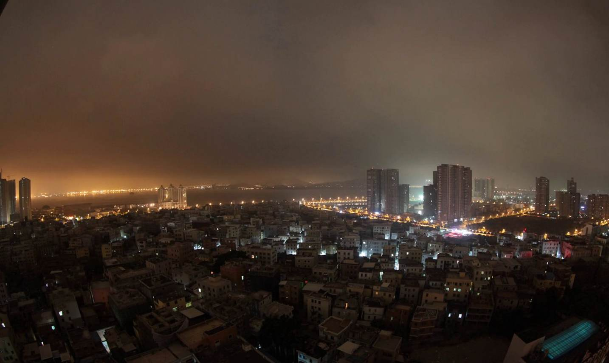
Auto Exposure Bracketing
-
Quickly snap 3 shots at different exposures
-
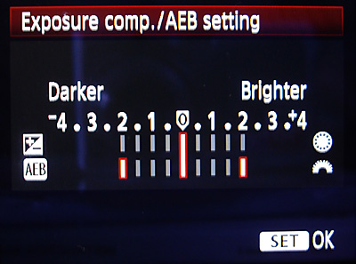
-
3 chances to make sure one turns out well
Auto Exposure Bracketing
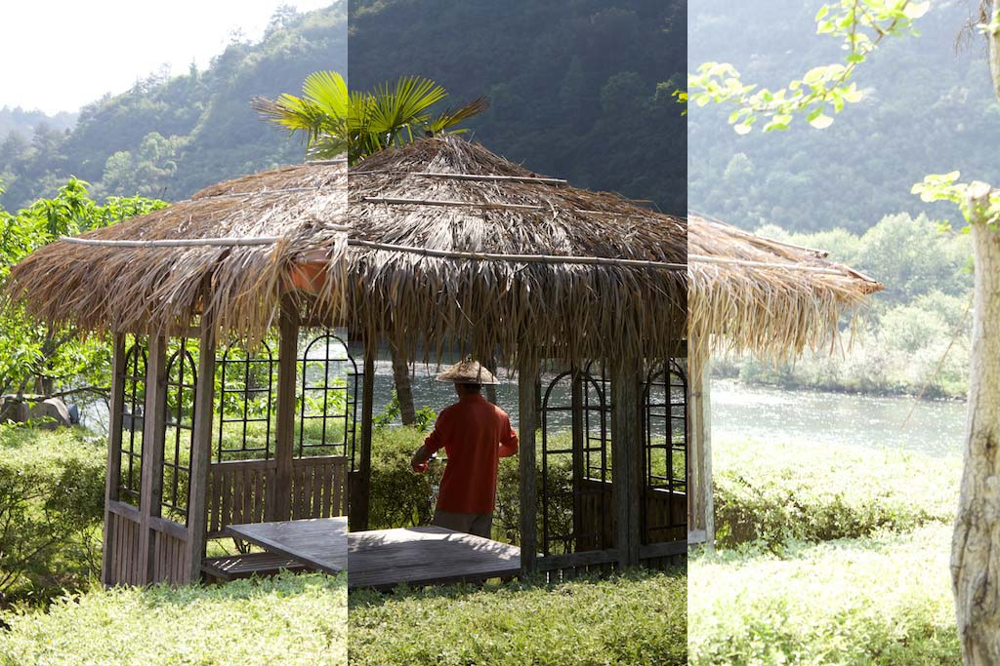
AEB is a way to plan for unexpected
- Hiking in the morning, shooting at f/8.0 ISO 100
- Suddenly, I saw something on the trail I wanted a photo of
- Not much time to think or I'd miss the shot
Check your settings regularly
- Are you in RAW mode full resolution
- Are you in the proper mode?
- Are you paying attention to autofocus points?
- Is your aperture setting appropriate?
Be ready for the shot
-
Sunrise/sunset
-
The first/last rays of light don't stick around long, ~2-8 minutes
-
Losing a few minutes to a lense change or adjusting your settings
can cut your shooting time in half
-
Stick with a versatile lense when you think you'll be time crunched
Photographers at sunset
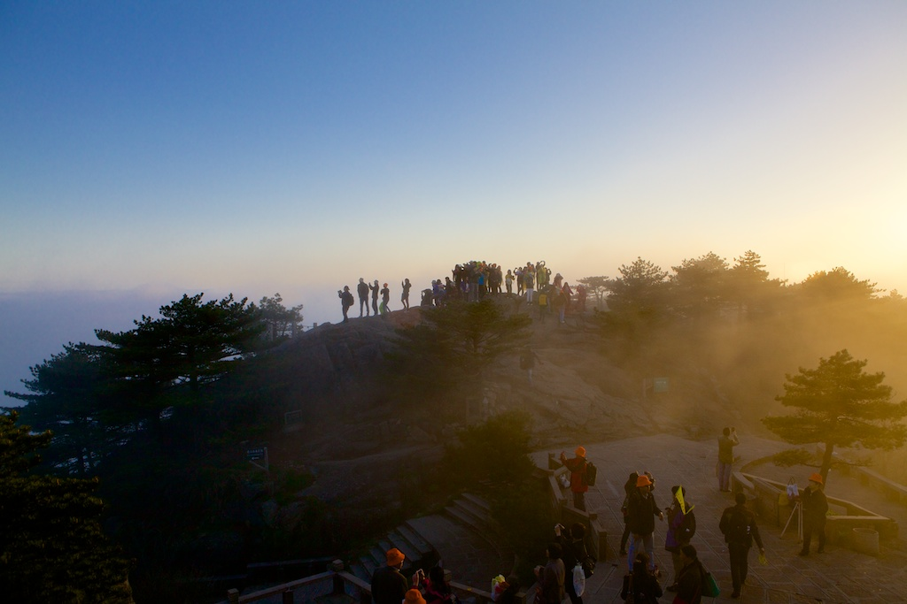
Monkey rock at sunrise
- three days in Huangshan (Yellow Mountains)
- rained the first day
- completely foggy the second day (except sunset)
- due for a clear sunrise
- woke up at 4am, hit the trail at 4:20am, reached peak at 5am
- had to climb over/around people for unobstructed view
- some photographers had been there since 3:30am
- sunrise around 5:30am
Monkey Rock sunrise (24mm)
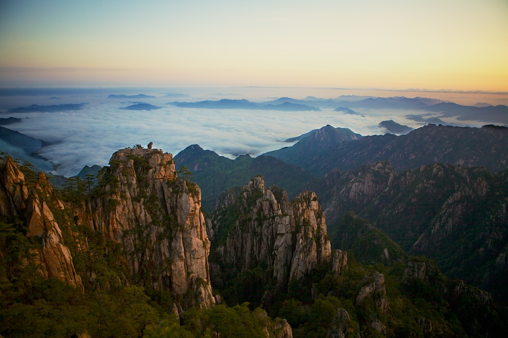
Serious photographers
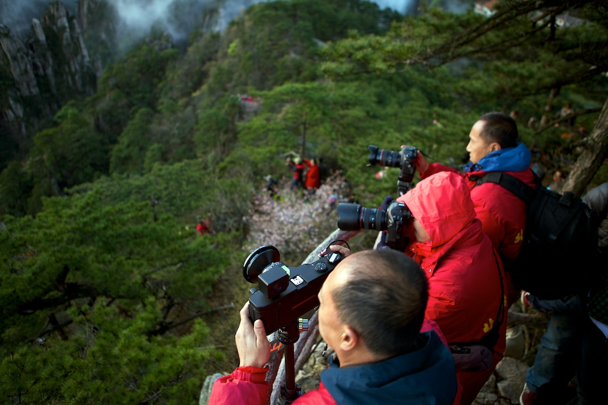
A trick that works in China
-
While researching Dajinhi on Wikitravel, one review said
"everyone follows each other in a bunch; if you go ten feet
out of the way you'll have a clear shot"
-
Unbelievably accurate.
-
My theory: everyone wants exactly the same tourist photo and
don't stray far from the beaten path
-
That seemed to be a common trend, people would rush to get a
photo of them near something and then rush off again
Locations
-
Research ahead of time if possible (Wikitravel, TripAdvisor)
-
Visit most popular places during off hours, e.g. weekdays, during lunch, etc
-
Best lighting ("magic hour") at sunrise and sunset
-
Ask hotel/hostel staff about weather conditions
-
... but weather predictions are often wrong
-
Locals (friends, family, tour guides) are worth their weight in gold
Culling and post-processing
-
If I leave all my photos until I get home, they sit
-
Also don't want to spend your whole trip editing photos
-
Have a strategy
-
I took over 3000 photos in three weeks
My travel photo management strategy
-
32 GB flash card, Macbook with about 60 GB free
-
Dump photos as often from card to laptop
-
Delete obviously bad photos from laptop often
-
Especially
if you're using AEB, you can usually dump 66% of photos
-
Resist urge to edit to perfection
-
... unless you really want to upload to Flickr ;-)
Don't get caught off guard
-
Your photo management strategy should not depend on Internet
-
Don't wait until your battery is dead to charge it
-
If the photos are very important, bring multiple external hard drives
-
Bring a lens cloth, rainjacket if raining
-
Guard your camera in a crowd
Pollution from Beihai, Beijing
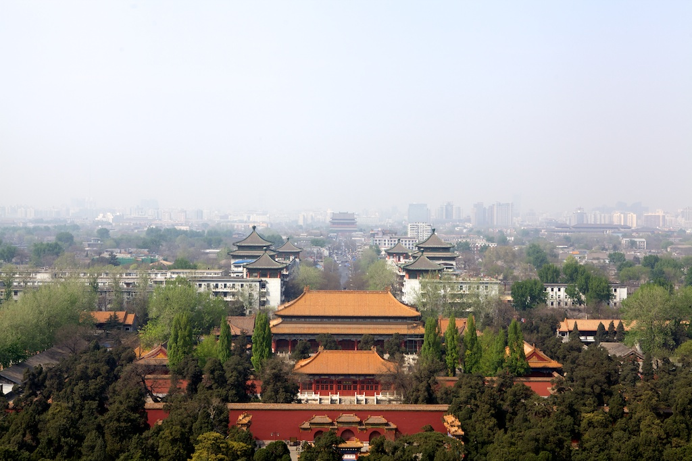
Hanging Temples at Dajinhu
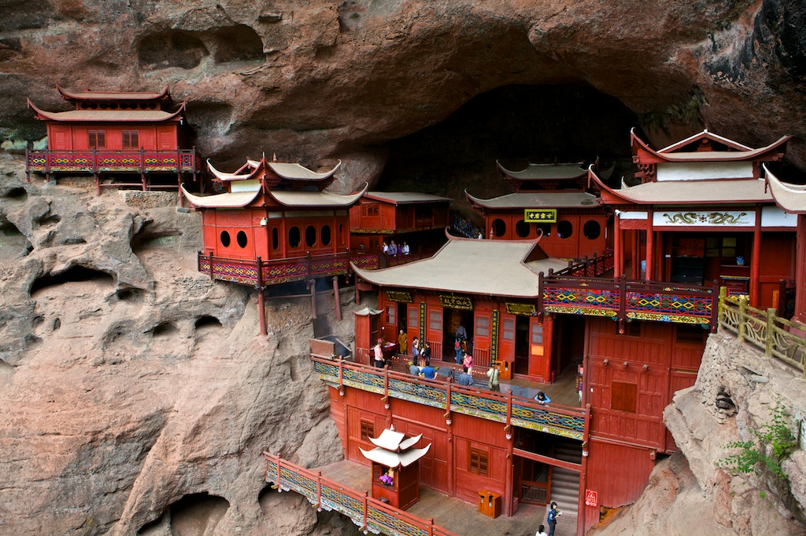
White Goose hotel, Huangshan
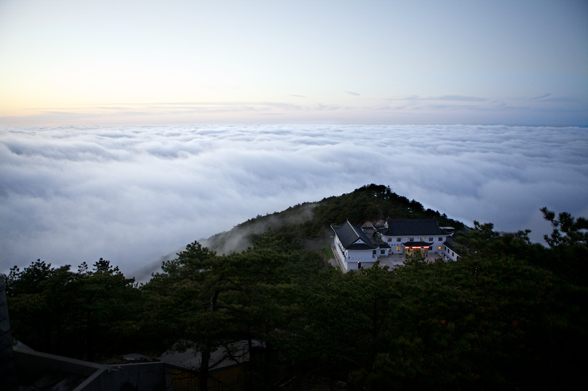
Huangshan bridge lights
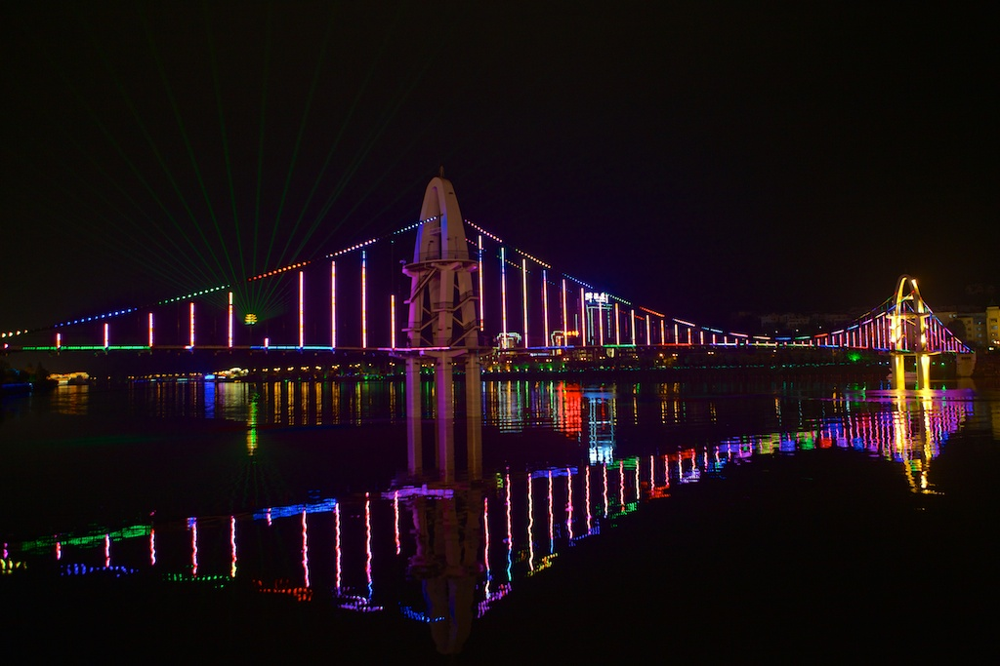
Rent the best gear
- Photography is expensive
- Hard to justify 2k for a lens you use 5 weeks/year
- Local rental shops (Adolph Gasser, Samy's)
- Online rental shops (BorrowLenses)
- Peer-to-peer rentals
CameraLends
- Over 200 cameras and lenses
- Most dense over the Bay Area
- Flexible pickup and dropoff times
- Often less expensive than other options (1-day)
- Builds a connection with another photographer